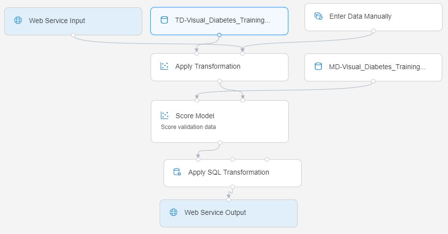

Lab 2B: Deploying a Real-Time Endpoint with the Azure ML Designer
Now that you have a trained model, you can take the training pipeline and use it to create an inference pipeline for scoring new data.
Before You Start
Before you start this lab, ensure that you have completed Lab 1A and Lab 1B, which include tasks to create the Azure Machine Learning workspace and other resources used in this lab. You must also complete Lab 2A, which includes tasks to create the Designer training pipeline used in this lab.
Task 1: Review Compute
Important - how Designer deployment differs from the rest of this course: the Designer pipeline you built in Lab 2A uses classic prebuilt modules (Normalize Data, Train Model, Score Model, and so on). Pipelines built from these classic modules can only be deployed to Azure Container Instances (ACI) or an Azure Kubernetes Service (AKS) inference cluster - the Compute type drop-down in the deployment dialog offers exactly those two options and nothing else.
Managed online endpoints - the modern SDK v2 deployment target you'll use in Lab 7A - are not available for classic Designer pipelines. They're used when you deploy a registered model with the SDK/CLI v2, or when you build a Designer pipeline from custom (v2) components.
In this lab you'll deploy to Azure Container Instance, because it requires no compute to be created in advance. ACI is intended for development and testing scenarios like this one, not for production workloads.
In Azure Machine Learning studio, on the Compute page for your workspace, review the existing compute targets under each tab. These should include:
- Compute Instances: The compute instance you created in a previous lab.
- Compute Clusters: The aml-cluster compute target you created in a previous lab.
- Kubernetes clusters: None - you don't need one, because you'll deploy to ACI rather than AKS.
- Attached Compute: None (this is where you could attach a virtual machine or Databricks cluster that exists outside of your workspace)
In the Compute Instances tab, if your compute instance is not already running, start it - you will use it later in this lab.
Task 2: Create an Inference Pipeline
With your training pipeline run complete, you can prepare the inference pipeline for deployment.
On the Designer page, open the Visual Diabetes Training pipeline you created in the previous lab.
In the Create inference pipeline drop-down list, click Real-time inference pipeline. After a few seconds, a new version of your pipeline named Visual Diabetes Training-real time inference will be opened.
Rename the new pipeline to Predict Diabetes, and then review the new pipeline. Note that some of the transformations and training steps have been encapsulated in this pipeline so that the statistics from your training data will be used to normalize any new data values, and the trained model will be used to score the new data.
The inference pipeline assumes that new data will match the schema of the original training data, so the diabetes_dataset module from the training pipeline is included. However, this input data includes the Diabetic label that the model predicts, which is unintuitive to include in new patient data for which a diabetes prediction has not yet been made. Delete this module and replace it with an Enter Data Manually module from the Data Input and Output section, connected to the same dataset input of the Apply Transformation module as the Web Service Input. Then modify the settings of the Enter Data Manually module to use the following CSV input, which includes feature values without labels for three new patient observations:
PatientID,Pregnancies,PlasmaGlucose,DiastolicBloodPressure,TricepsThickness,SerumInsulin,BMI,DiabetesPedigree,Age 1882185,9,104,51,7,24,27.36983156,1.350472047,43 1662484,6,73,61,35,24,18.74367404,1.074147566,75 1228510,4,115,50,29,243,34.69215364,0.741159926,59The inference pipeline includes the Evaluate Model module, which is not useful when predicting from new data, so delete this module.
The ouput from the Score Model module includes all of the input features as well as the predicted label and probability score. To limit the output to only the prediction and probability, delete the connection between the Score Model module and the Web Service Output, add an Apply SQL Transformation module from the Data Transformations section, connect the output from the Score Model module to the t1 (left-most) input of the Apply SQL Transformation, and connect the output of the Apply SQL Transformation module to the Web Service Output. Then modify the settings of the Apply SQL Transformation module to use the following SQL query script:
SELECT PatientID, [Scored Labels] AS DiabetesPrediction, [Scored Probabilities] AS Probability FROM t1Verify that your pipeline looks similar to the following:

Run the pipeline as a new experiment named predict-diabetes on the aml-cluster compute target you used for training. This may take a while!
Task 3: Deploy a Real-Time Endpoint
Now you have an inference pipeline for real-time inferencing, which you can deploy as a real-time endpoint for client applications to use.
Switch back to the Designer tab and reopen your Predict Diabetes inference pipeline. If it has not yet finished running, await it's completion. Then visualize the output of the Apply SQL Transformation module to see the predicted labels and probabilties for the three patient observations in the input data.
At the top right, click Deploy. In the Set up real-time endpoint dialog:
- Select Deploy new real-time endpoint.
- Name: predict-diabetes
- Compute type: Azure Container Instance
Note: The Compute type list contains only AksCompute and Azure Container Instance - these are the only targets classic Designer pipelines support. Choose Azure Container Instance: it's provisioned on demand, so you don't need an AKS inference cluster. Selecting AksCompute would require you to create and pay for a Kubernetes cluster first.
You can expand Advanced to adjust the CPU and memory reserved for the container, or the authentication settings. The defaults are fine for this lab.
Wait for the endpoint to be deployed - this can take several minutes. The deployment status is shown at the top left of the Designer interface.
Tip: While you're waiting for your endpoint to be deployed, why not spend some time reviewing the Azure Machine Learning Designer documentation at https://learn.microsoft.com/azure/machine-learning/concept-designer?
Task 4: Test the Endpoint
Now you can test your deployed endpoint from a client application - in this case, you'll use a notebook on your compute instance.
- On the Endpoints page, open the predict-diabetes real-time endpoint.
- When the predict-diabetes endpoint opens, on the Test page, note the default test input parameters and then click Test to submit them to the deployed endpoint and generate a prediction.
- On the Consume tab, note the endpoint's REST endpoint (scoring) URI and authentication key, and view the sample code that is provided for Python. Copy the entire Python sample script to the clipboard.
- On the Compute page, if your compute instance is not yet running, wait for it to start. Then click its JupyterLab link.
- In JupyterLab, in the
~/cloudfiles/code/Users/<your-user-name>/MachineLearningCourse/materialy/azure-ml/enfolder, open 02B - Using the Visual Designer.ipynb. - In the notebook, paste the code you copied into the empty code cell. The sample code sends a request to the endpoint's scoring URI, authenticating with the endpoint's key.
- Run the code cell and view the output returned by your endpoint.
Task 5: Delete the Endpoint
An Azure Container Instance deployment runs (and bills) for as long as the endpoint exists, so delete it once you're finished. Because you deployed to ACI rather than AKS, there's no separate inference cluster left behind - deleting the endpoint removes the container that was provisioned for it.
- In the Studio web interface for your Azure ML workspace, on the Endpoints page, select the predict-diabetes endpoint. Then click the Delete (🗑) button and confirm that you want to delete the endpoint.
Note: If you intend to continue straight to the next exercise, leave your compute instance running. If you're taking a break, you might want to close the Jupyter tabs and Stop your compute instance to avoid incurring unnecessary costs.